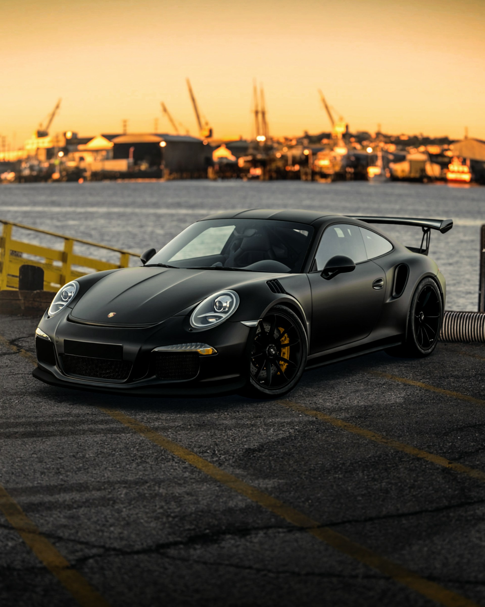

Porsche este un producător german de mașini sport și de lux, fondat în 1931 de către Ferdinand Porsche. Compania este cunoscută pentru modelele sale iconice, precum Porsche 911, dar produce și alte modele, cum ar fi Porsche Cayenne (SUV), Porsche Panamera (limuzină sport) și Porsche Macan (SUV compact). Porsche este recunoscut pentru tehnologia sa inovatoare și performanța impresionantă a mașinilor sale.Porsche a avut o istorie bogată în motorsport, participând și câștigând numeroase curse de mare prestigiu, inclusiv multiple victorii la Le Mans și în alte competiții importante. De-a lungul anilor, Porsche și-a extins gama de vehicule pentru a include modele cu tracțiune integrală, hibrizi și chiar complet electrice, cum ar fi Porsche Taycan. Compania Porsche este parte a grupului Volkswagen și are sediul în Stuttgart, Germania.
